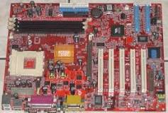

En Maskinvara
Obs: Min källa är från Wikipedia
Maskinvara
eller hårdvara är samlingsnamn för en dators fysiska delar. Ordet hårdvara är en direktöversättning av engelskans hardware som betyder ungefär järnvaror, sådant man köper i en järnhandel (hardware store).